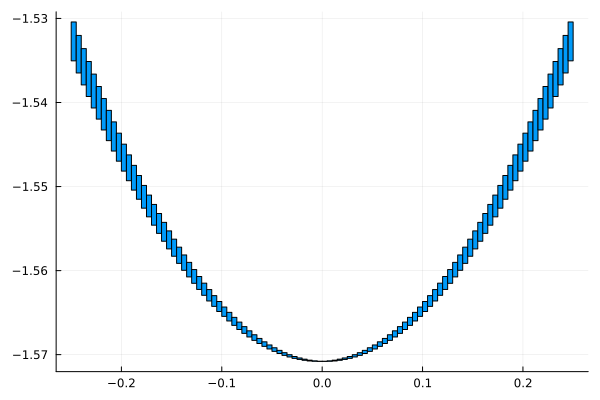

Week 8 Lab: Taylor arithmetic
Exercise 1: Removable singularities
The goal of this exercise is to compute enclosures of
\[f(t) = \frac{\cos\left(\frac{\pi}{2}(t + 1)\right)}{t},\]
for $t$ in the interval $[-1/4, 1/4]$. Note that $f$ has a removable singularity at $t = 0$.
We start by loading the packages we will need, and also define the function $f$.
using Arblib
using IntervalArithmetic
using Plots
setprecision(Arb, 53) # We don't need too much precision
f(t) = cos(Arb(π) / 2 * (t + 1)) / tf (generic function with 1 method)To simplify plotting of Arb enclosures we define the following two functions.
# Return a rectangular shape with sides given by x and y. This shape
# can be plotted directly.
function to_shape(x::Arb, y::Arb)
x_min, x_max = getinterval(x)
y_min, y_max = getinterval(y)
xs = [x_min, x_max, x_max, x_min]
ys = [y_min, y_min, y_max, y_max]
return Shape(xs, ys)
end
function plot_balls(xs::Vector{Arb}, ys::Vector{Arb})
plot(to_shape.(xs, ys), color = 1, legend = false)
endplot_balls (generic function with 1 method)Task 1: Direct evaluation
Plot $f$ on $[-1/4, 1/4]$ using direct evaluation. Do this by splitting the interval into 100 subintervals and evaluating it on each subinterval. Hint: To split the interval into subintervals the IntervalArithmetic.mince function is handy, you can then convert the Intervals into Arb values.
What happens with the enclosures near zero? Can you explain why?
Task 2: Taylor expanding numerator
Compute a Taylor expansion (with remainder term) of the numerator at $t = 0$ and use this to plot $f$ on the interval. You are free to choose the degree, but for example the degree of $n = 2$ works well. Note: The enclosures you get in this case will not be much better than in the previous case. This part is mainly a setup for the next step.
Solution
We start by computing the series expansion and the remainder term.
# Numerator of f
f_num(t) = cos(Arb(π) / 2 * (t + 1))
# Compute Taylor expansion of numerator at t = 0
n = 2 # Degree of Taylor expansion
f_num_0_series = f_num(ArbSeries((0, 1), degree = n))
# Compute enclosure of remainder term on [-1 / 4, 1 / 4]
ab = Arb((-0.25, 0.25))
f_num_ab_series = f_num(ArbSeries((ab, 1), degree = n + 1))
R = f_num_ab_series[n + 1][0.6 +/- 0.0460]We can now evaluate $f$ and plot.
ys_2 = map(ts) do t
(f_num_0_series(t) + R * t^(n + 1)) / t
end
plot_balls(ts, ys_2)The figure is mostly identical to the previous one. The Taylor expansion didn't give us any improvements at this stage.
Task 3: Explicitly cancel division by $t$
The next step is to explicitly cancel the division by $t$ in the evaluation of $f$. The key here is to notice that the constant term in the Taylor expansion of the numerator of $f$ is exactly zero at $t = 0$. Hence, all terms have a factor $t$ in them which can be explicitly cancelled. Hint: If the constant term in the Taylor expansion of $g(t)$ is zero, then the Taylor expansion for $\frac{g(t)}{t}$ is given by shifting the coefficients in the Taylor expansion of $g(t)$ by one step. In Arblib this can be achieved by ArbSeries(g_series[1:end]), if g_series is the ArbSeries for $g$.
Solution
For pedagogical reasons, let us split the simplification into two parts. Recall that the evaluation of $ys_2$ in the above task was done through
ys_2 = map(ts) do t
(f_num_0_series(t) + R * t^(n + 1)) / t
endFor the second term we can immediately cancel one $t$ in the division of $t^{n + 1}$ by $t$. This gives us
ys_3 = map(ts) do t
f_num_0_series(t) / t + R * t^n
end
plot_balls(ts, ys_3)As you can see from the plot, this, however, doesn't change the result much. The main error is coming from the evaluation of f_num_0_series(t) / t. To reduce that error we want to explicitly cancel the division by $t$. Following the hint we can do this as
julia> f_num_0_series # Recall that this is the value for f_num_0_series[+/- 1.73e-16] + [-1.57079632679490 +/- 4.18e-15]⋅x + [+/- 2.14e-16]⋅x^2 + 𝒪(x^3)julia> f_num_0_series_div_t = ArbSeries(f_num_0_series[1:end])[-1.57079632679490 +/- 4.18e-15] + [+/- 2.14e-16]⋅x + 𝒪(x^2)
We see that the result is a ArbSeries of one degree lower, with the coefficients shifted one step. We can now evaluate $f$ using this.
ys_4 = map(ts) do t
f_num_0_series_div_t(t) + R * t^n
end
plot_balls(ts, ys_4)
This looks much better! There are still some overestimations in the enclosures (how can you know that?). In this case they come from the bound of the remainder term and taking $n = 4$ (instead of $2$) would remove most of them.
For this last cancellation to be valid, the constant term in the Taylor expansion of the numerator of $f$ must be exactly zero. We can of course verify by hand that this happens, we get
\[\cos\left(\frac{\pi}{2}(0 + 1)\right) = \cos\left(\frac{\pi}{2}\right) = 0.\]
It is however not directly verified by the code. We have
julia> f_num_0_series[0][+/- 1.73e-16]
which contains zero, but is not exactly zero. This simplification therefore requires a combination of computer computations and verification by hand. The reason that we don't immediately get that the constant term is zero is that $\pi$ is not exactly represented. This can in fact be handled by using cospi instead of cos. In that case we would get
julia> f_num_alternative(t) = cospi((t + 1) / 2)f_num_alternative (generic function with 1 method)julia> f_num_0_series_alternative = f_num_alternative(ArbSeries((0, 1), degree = n))[-1.57079632679490 +/- 3.56e-15]⋅x + 𝒪(x^3)julia> iszero(f_num_0_series_alternative[0])true
We see that now the constant term is exactly zero, removing the need for any verification by hand!
Exercise 2: fx_div_x
The goal of this exercise is to implement a function, fx_div_x, which automatically handles evaluation for functions of the form
\[\frac{f(x)}{x}\]
when $f$ has a zero at the origin. We want to implement the following function.
"""
fx_div_x(f, x::Arb; degree::Int = 1)
Compute an enclosure of `f(x) / x` for a function `f` with a zero
at the origin.
The argument `degree` determines the degree of the Taylor expansion used
for the computations.
"""
function fx_div_x(f, x::Arb; degree::Int = 1)
# TODO: Implement this!
endSolution
Following the approach from the previous exercise we get the following implementation.
"""
fx_div_x(f, x::Arb; degree::Int = 1)
Compute an enclosure of `f(x) / x` for a function `f` with a zero
at the origin.
"""
function fx_div_x(f, x::Arb; degree::Int = 1)
# Compute expansion at zero
f_0_series = f(ArbSeries((0, 1), degree = degree))
# Compute remainder term
# Construct an enclosure of the interval between 0 and x
zero_to_x = Arblib.union(Arb(0), x)
R = f(ArbSeries((zero_to_x, 1), degree = degree + 1))[degree + 1]
# Compute expansion divided by x
f_0_series_div_x = ArbSeries(f_0_series[1:end])
return f_0_series_div_x(x) + R * x^degree
endMain.fx_div_xTo check that it seems to work we can apply it to a couple of functions. A good way to check correctness is to use it to evaluate the function a bit away from zero. The result can then be compared to a direct evaluation. We take $x = 1 / 100$, so that we don't need too large degrees to get good enclosures.
Example from previous exercise
julia> x = Arb(1 // 100)[0.0100000000000000 +/- 3.27e-18]julia> y_0 = f_num(x) / x # Direct evaluation[-1.5707317311820 +/- 7.75e-14]julia> y_1 = fx_div_x(f_num, x)[-1.571 +/- 3.98e-4]julia> y_2 = fx_div_x(f_num, x, degree = 2)[-1.57073173 +/- 8.36e-9]julia> y_3 = fx_div_x(f_num, x, degree = 3)[-1.57073173 +/- 4.37e-9]julia> y_4 = fx_div_x(f_num, x, degree = 4)[-1.5707317311820 +/- 7.27e-14]julia> Arblib.overlaps(y_0, y_1)truejulia> Arblib.overlaps(y_0, y_2)truejulia> Arblib.overlaps(y_0, y_3)truejulia> Arblib.overlaps(y_0, y_4)true
The function $f_1(x) = \sin(\pi x)$.
julia> x = Arb(1 // 100)[0.0100000000000000 +/- 3.27e-18]julia> f_1(x) = sinpi(x)f_1 (generic function with 1 method)julia> y_0 = f_1(x) / x # Direct evaluation[3.14107590781283 +/- 5.29e-15]julia> y_1 = fx_div_x(f_1, x)[3.141 +/- 9.58e-4]julia> y_2 = fx_div_x(f_1, x, degree = 2)[3.141076 +/- 1.38e-7]julia> y_3 = fx_div_x(f_1, x, degree = 3)[3.141076 +/- 1.18e-7]julia> y_4 = fx_div_x(f_1, x, degree = 4)[3.14107590781 +/- 9.16e-12]julia> Arblib.overlaps(y_0, y_1)truejulia> Arblib.overlaps(y_0, y_2)truejulia> Arblib.overlaps(y_0, y_3)truejulia> Arblib.overlaps(y_0, y_4)true
The function $f_2(x) = \log(1 + x)$.
julia> x = Arb(1 // 100)[0.0100000000000000 +/- 3.27e-18]julia> f_2(x) = log(1 + x)f_2 (generic function with 1 method)julia> y_0 = f_2(x) / x # Direct evaluation[0.9950330853168 +/- 3.56e-14]julia> y_1 = fx_div_x(f_2, x)[0.9950 +/- 9.88e-5]julia> y_2 = fx_div_x(f_2, x, degree = 2)[0.995033 +/- 6.52e-7]julia> y_3 = fx_div_x(f_2, x, degree = 3)[0.99503309 +/- 6.67e-9]julia> y_4 = fx_div_x(f_2, x, degree = 4)[0.9950330853 +/- 6.48e-11]julia> Arblib.overlaps(y_0, y_1)truejulia> Arblib.overlaps(y_0, y_2)truejulia> Arblib.overlaps(y_0, y_3)truejulia> Arblib.overlaps(y_0, y_4)true
What happens if you give as input a function $f$ which doesn't have a zero at the origin?